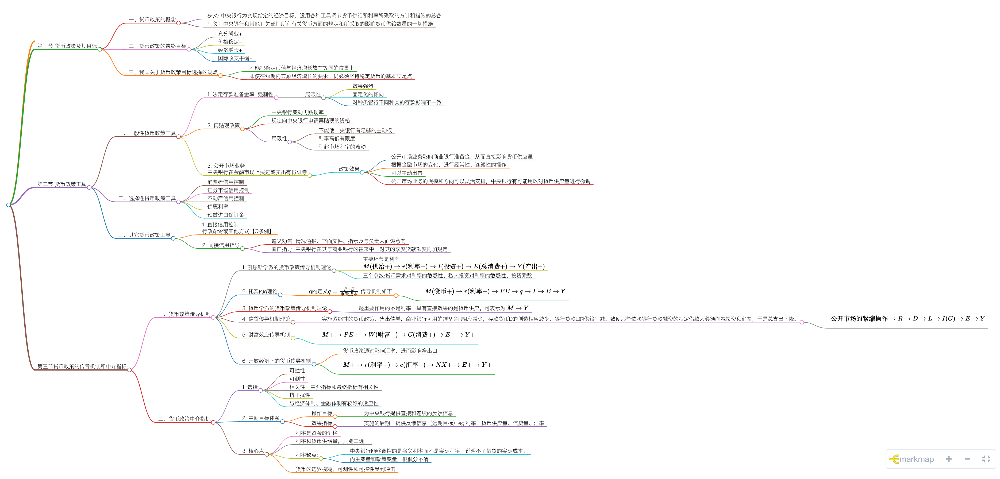

[toc]
第一节 货币政策及其目标
一、货币政策的概念
- 狭义: 中央银行为实现给定的经济目标，运用各种工具调节货币供给和利率所采取的方针和措施的总各
- 广义：中央银行和其他有关部门所有有关货币方面的规定和所采取的影响货币供给数量的一切措施
二、货币政策的最终目标
- 充分就业+
- 价格稳定-
- 经济增长+
- 国际收支平衡-
三、我国关于货币政策目标选择的观点
保持货币币值的稳定，并以此促进经济增长

- 不能把稳定币值与经济增长放在等同的位置上
- 即使在短期内兼顾经济增长的要求，仍必须坚持稳定货币的基本立足点
第二节 货币政策工具
一、一般性货币政策工具
常规货币政策工具，是中央银行所采用的对整个金融系统的货币信用扩张与紧缩产生全面性或一般性影响的手段
- 法定存款准备金率-强制性
- 局限性
- 效果强烈
- 固定化的倾向
- 对种类银行不同种类的存款影响不一致
- 局限性
- 再贴现政策
- 中央银行变动再贴现率
- 规定向中央银行申请再贴现的资格
- 局限性
- 不能使中央银行有足够的主动权
- 利率高低有限度
- 引起市场利率的波动
- 公开市场业务中央银行在金融市场上买进或卖出有份证券
- 政策效果
- 公开市场业务影响商业银行准备金，从而直接影响货币供应量
- 根据金融市场的变化，进行经常性、连续性的操作
- 可以主动出击
- 公开市场业务的规模和方向可以灵活安排，中央银行有可能用以对货币供应量进行微调
- 政策效果

二、选择性货币政策工具
中央银行针对某些特殊的信贷或某些特殊的经济领域而采用的工具
- 消费者信用控制
- 证券市场信用控制
- 不动产信用控制
- 优惠利率
- 预缴进口保证金
三、其它货币政策工具
- 直接信用控制行政命令或其他方式【Q条例】
- 间接信用指导
- 道义劝告: 情况通报、书面文件、指示及与负责人面谈意向
- 窗口指导: 中央银行在其与商业银行的往来中，对其的季度贷款额度附加规定
四、题目
货币供给增加对产出和物价的影响是什么答案：
- 短期，产出增加(流动偏好陷阱是特例),物价变动不确定
- 长期，产出不变，物价同比例上升
第三节货币政策的传导机制和中介指标
一、货币政策传导机制
中央银行根据贷币政策目标，运用货币政策工具，通过金融机构的经营活动和金融市场传导至企业、居民，对其生产、投资和消费等行为产生影响的过程。
- 凯恩斯学派的货币政策传导机制理论
- 主要环节是利率
- 三个参数:货币需求对利率的敏感性、私人投资对利率的敏感性、投资乘数
- 主要环节是利率
- 托宾的q理论
- q的定义 传导机制如下:
-
- q的定义 传导机制如下:
- 货币学派的货币政策传导机制理论
- 起重要作用的不是利率，具有直接效果的是货币供应。可表示为:
- 信贷传导机制理论
- 公开市场的紧缩操作,实施紧缩性的货币政策，售出债券，商业银行可用的准备金R相应减少，存款货币D的创造相应减少，银行贷款L的供给削减。致使那些依赖银行贷款融资的特定借款人必须削减投资和消费，于是总支出下降。
-
- 公开市场的紧缩操作,实施紧缩性的货币政策，售出债券，商业银行可用的准备金R相应减少，存款货币D的创造相应减少，银行贷款L的供给削减。致使那些依赖银行贷款融资的特定借款人必须削减投资和消费，于是总支出下降。
- 财富效应传导机制
- 开放经济下的货币传导机制
- 货币政策通过影响汇率，进而影响净出口
二、货币政策中介指标
- 选择
- 可控性
- 可测性
- 相关性：中介指标和最终指标有相关性
- 抗干扰性
- 与经济体制、金融体制有较好的适应性
- 中间目标体系
- 操作目标
- 为中央银行提供直接和连续的反馈信息
- 效果指标
- 实施的后期，提供反馈信息（远期目标）eg:利率、货币供应量、信贷量、汇率
- 操作目标
- 核心点
- 利率是资金的价格
- 利率和货币供给量，只能二选一
- 利率缺点:
- 中央银行能够调控的是名义利率而不是实际利率，说明不了借贷的实际成本；
- 内生变量和政策变量，傻傻分不清
- 货币的边界模糊，可测性和可控性受到冲击